Marine community ecology
海洋底生生物の群集構造と環境勾配
MARINE ECOLOGY · BIOGEOGRAPHY
北海道大学 北方生物圏フィールド科学センター 厚岸臨海実験所 / Akkeshi Marine Station, Hokkaido University
Marine community ecology Biogeography Benthic amphipods
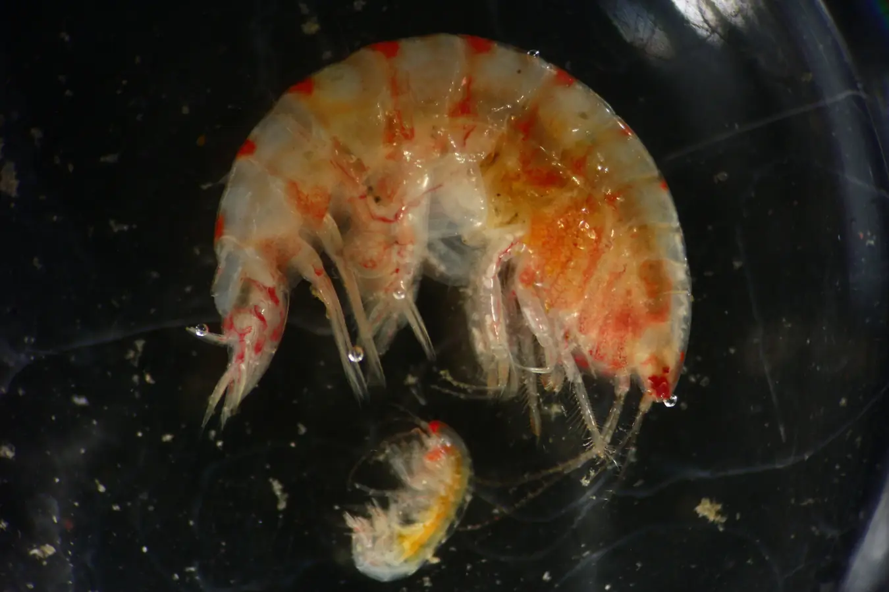
01 / ABOUT
北海道大学の博士課程で、海洋底生生物の群集生態学と生物地理学を研究しています。特に、底生ヨコエビ類の分布と群集構造に関心があります。
Doctoral researcher at Hokkaido University studying marine benthic community ecology and biogeography, with a focus on benthic amphipods.
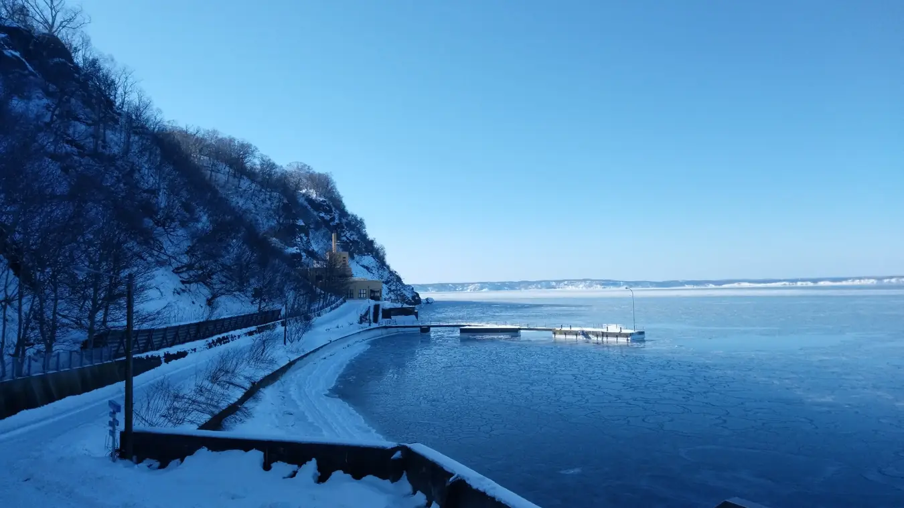
02 / RESEARCH
海洋底生生物の群集構造と環境勾配
緯度・水深に沿った分布と生物地理学的パターン
底生ヨコエビ類の多様性と分布
03 / PUBLICATIONS
Journal of the Marine Biological Association of the United Kingdom, 105, e92.
DOI: 10.1017/S0025315425100544Horizontal and vertical distribution of benthic amphipod communities in relation to the biogeographic affinities of component species底生ヨコエビ類の水平・鉛直分布と生物地理学的属性との関連性
北海道大学大学院環境科学院 · 学位取得前
太平洋西部亜寒帯域におけるヨコエビ類群集構造決定要因の相対的重要性
北海道大学大学院環境科学院
04 / PRESENTATIONS
日本プランクトン学会・日本ベントス学会合同大会 · 長崎 · 口頭発表
20th International Colloquium on Amphipoda · Łódź, Poland · Poster
日本生態学会第72回全国大会 · 札幌 · 口頭発表
日本甲殻類学会第62回大会 · 函館 · ポスター発表
The 5th Asian Marine Biology Symposium · Bangkok, Thailand · Oral
10th International Crustacean Congress · Wellington, New Zealand · Oral · Sekioka, T. & Nakaoka, M.
自由集会の企画・運営に参画し、「今日からできるビッグデータ利用：ChatGPT, R, QGISで生物地理学」を担当。
日本プランクトン学会・日本ベントス学会合同大会 · 長崎
2025年6月採択
2023年度採択、後継制度で2026年3月まで継続支援
2022年7月選出
05 / FIELD & ORGANISMS
研究対象や調査地で出会った生き物たちの写真です。Images of benthic organisms and coastal habitats.
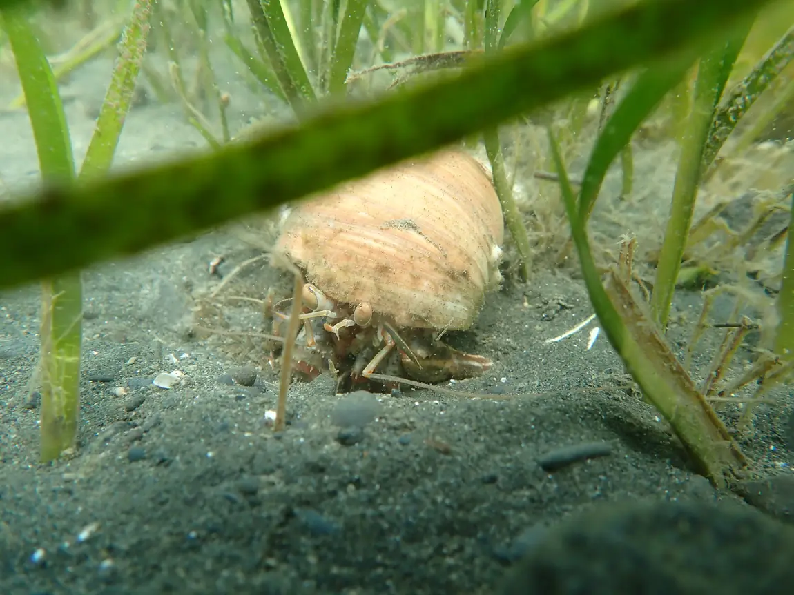
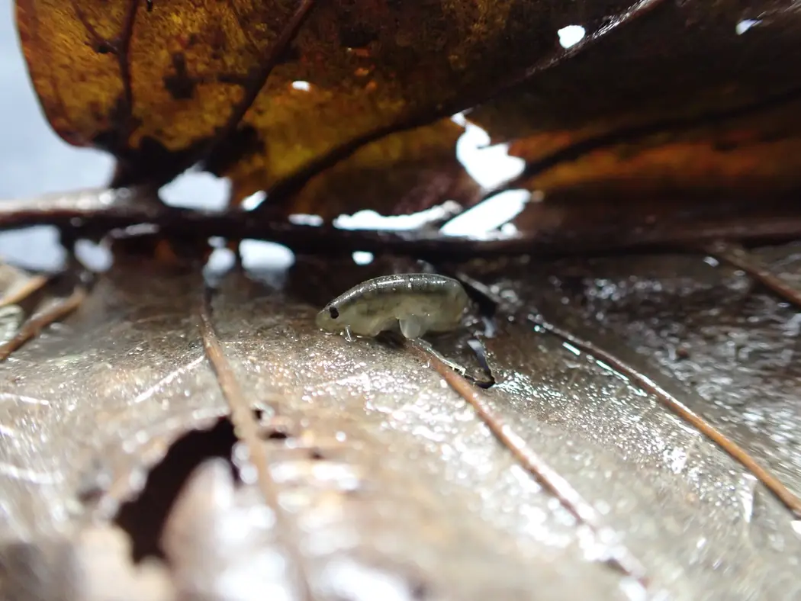
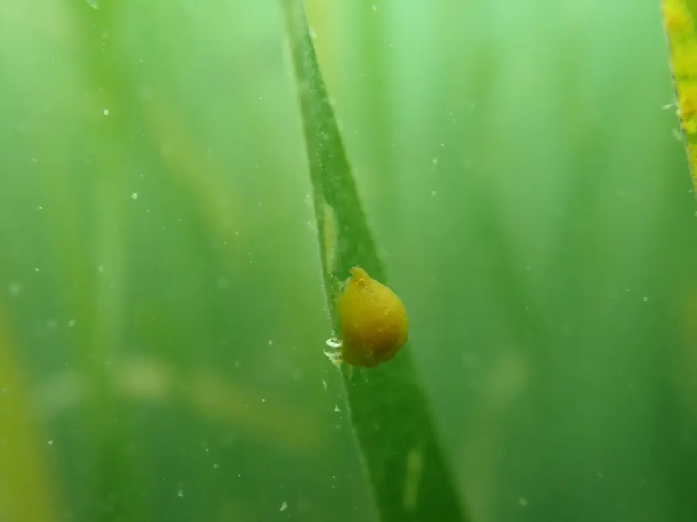
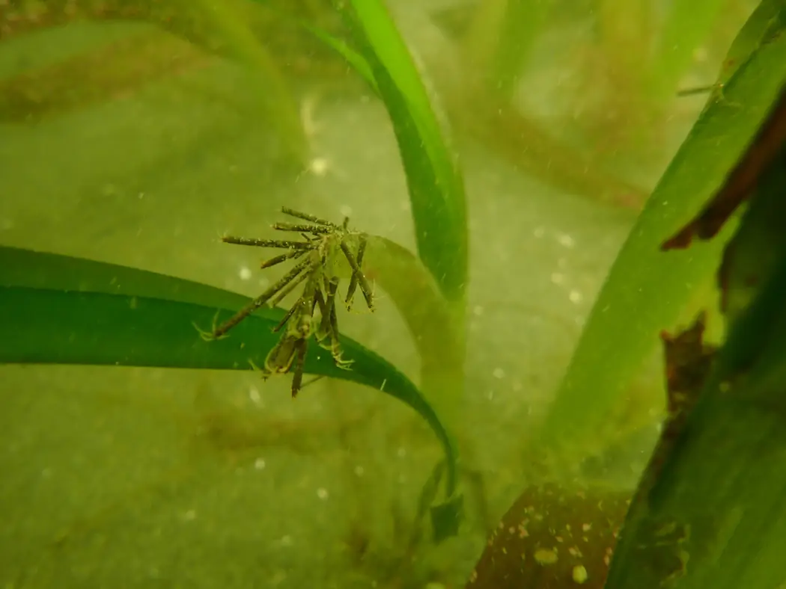
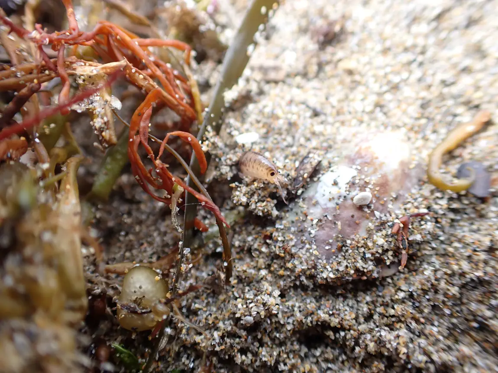
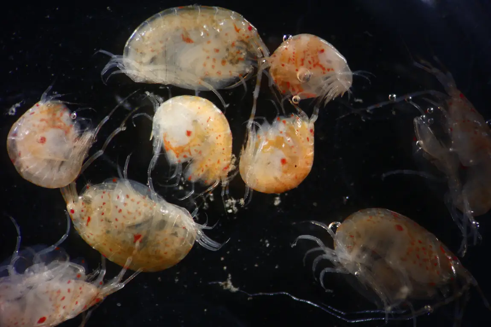
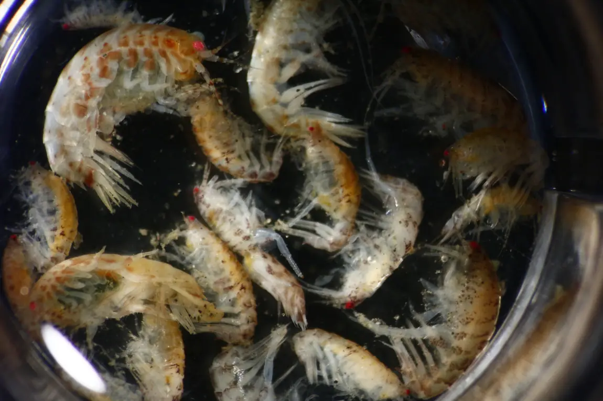
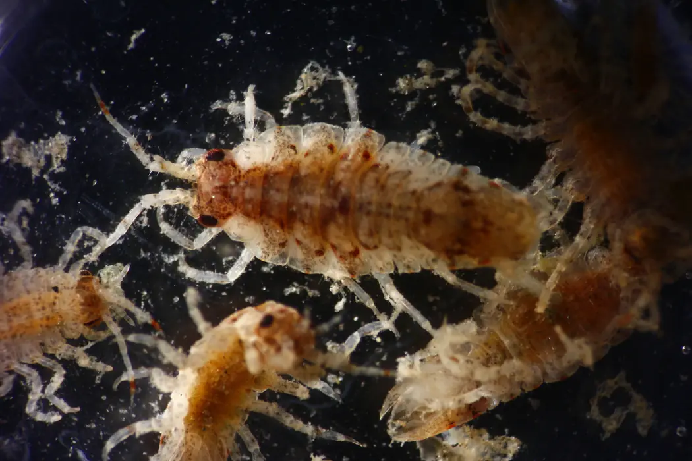
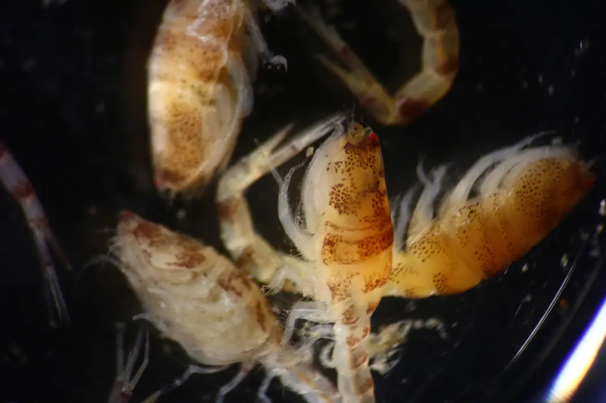
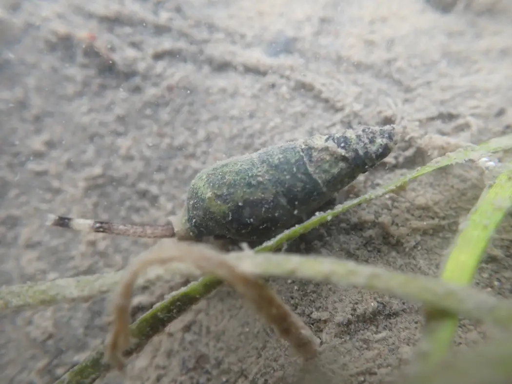
写真の転載・再利用には事前の許可が必要です。写真の利用について ↗
A LITTLE FIELD GAME / MINI GAMEヨコエビ採集日和海藻・砂底・岩・ブイに隠れたドット絵のヨコエビを採集。網を近づけると、するりと逃げる！ PLAY ↗06 / EDUCATION & FIELDWORK
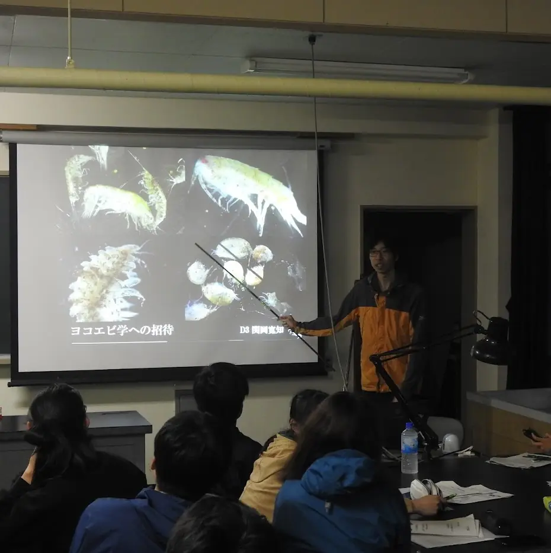
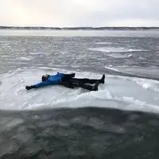
Teaching Fellow（TF）として実習を支援。自作の教材・スライドによる「ヨコエビ学入門」も担当。
2022年はTeaching Assistant（TA）として参加
実習補佐（TA）
実習補佐（TA）
ブルーカーボンの深海輸送プロセスに関する航海に参加。行程調整、GIS調査点図作成、ビームトロール・マルチプルコアラー調査、試料処理、情報発信などを担当。
風蓮湖、サロマ湖、ユルリ島・モユルリ島などで、藻場の潜水調査（SCUBA・シュノーケリング）や底曳き網調査に参加。
「モニタリングサイト1000」（厚岸・大槌）、Tara-JAMBIOブルーカーボンプロジェクト（厚岸・香川）、J-PEAKS関連研究に参画。アマモ場・コンブ藻場の調査、面積・密度の推定、底生生物の同定等に従事。
北海道大学北方生物圏フィールド科学センターで、外来学生・研究者の受入れ、野外調査支援、施設・機材管理等に従事。
07 / MEDIA & OUTREACH
大田原理科クラブ主催、馬頭高校の化学室で実施された解剖実習。北海道大学厚岸臨海実験所の博士課程から講師として参加。投稿画像・文章は転載していません。
下野新聞の記事掲載ページへのリンクです。現在は閲覧期限切れのため、本文を読めない場合があります。
干潟生物の分析と種同定を指導。
北海道大学の協力によるアイニンカップのアマモ場での採集・生物観察会。採集器具の実演と水圏生態系の解説を担当。
運営チームとして小学生の海洋環境学習を支援。
共著論文に関する大学公式プレスリリース（PDF）
そのほか、厚岸町主催の大黒島生物観察会など、地域での環境教育・普及啓発活動にも参加しています。
08 / CONTACT & LINKS
PHOTO POLICY
このサイトに掲載した写真の著作権は、それぞれの撮影者・権利者に帰属します。写真の転載・複製・再配布・改変・その他の利用には、権利者の事前許可が必要です。 公開サイトやGitHub上で閲覧できることは、自由利用の許諾を意味しません。
Copyright in the photographs belongs to the respective photographers and rightsholders. Prior permission is required for reproduction, redistribution, modification, or other reuse of photographs on this website. Public availability, including in the GitHub repository, does not grant a license to reuse them.